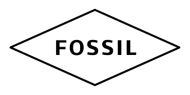

Q1.時計は時間を見るためだけのものである
Q2.時計メーカーと時計ブランドの違いを説明できる
Q3.物事を判断する時は、論理を順序だてるところから始める
Q4.他人が時計をつけているのを見ると羨ましいと思う
Q5.時間はこまめに確認しない方である
オリスは創業からクラシカルで完成度の高い機械式時計をリーズナブルに提供することで、多くの時計ファンの支持を獲得してきました。この時計メーカーは凝ったディティールに実用性の高い機構の搭載を得意とし、1938年には専用針で日付を表示する「ポインターデイト」は世界的に大ヒットしました。時計の機能一つ一つを他のメーカとは違った形で表現している時計が多く、例えば気圧計を時計のダイアルの外周に赤いポインターをつけて表示するなど、他のメーカーでは考えられない斬新なデザインになっています。時計業界では良い意味で独善的で個性も強く、「我が道を行く」型破りなメーカです。あなたが、自分のつける時計を回りと差別化したい場合、このメーカーは優先度の高い狙い目になるでしょう。

「世界最強の機械式時計」の称号をもつタフネスウォッチ、ボール・ウォッチはアメリカ発祥の時計メーカーです。この時計メーカーはアメリカの鉄道開発全盛期から、現代にいたるまで「いかに過酷な状況でも正確に時間を表示する」を理念として掲げ続けている時計メーカーです。時間は正確でなくてはいけないことを念頭に置いているためか、時間の正確性を阻害する障害を除くために耐久性と視認性を強化しています。時間という概念に、すごく重きを置いている個性の強い時計メーカとなっていますので、あなたが時間に対して真摯でいたい場合には、ピッタリなメーカに出会ったかもしれません。
ドイツ時計らしい高品質、高性能をリーズナブルに。”バウハウス最後の巨匠”と称されえるマック・ビルがデザインした腕時計が大ヒット。機能的で精悍なフォルムと、高品質でありながらリーズナブルな価格設定に、ドイツだけでなく世界にファンを持っています。実はこのメーカーは世界初の電波式腕時計「メガ1」というのを開発していル実績を持ちます。電波時計だと日本のCITIZENを思い浮かべますが、電波式腕時計はユンハンスが世界で一番に出しました。ドイツ製に興味がある人やドイツの技術力に関心がある人には向いたメーカとなっています。

休日・遊び用にも最適な、ユーモアな時計も豊富。1984年にテキサス州ダラスで誕生したフォッシル。メジャーブランドへと成長したのは、時計を単に時を刻む道具と考えず、シックでスタイリッシュな腕に着けるアイテムへと昇華させたからだといわれています。このメーカーは日本にとってのCITIZENみたいな存在に近く、コスパのいい時計をビジネス、ファッション、ラグジュアリーとたくさんの種類の時計を作り、たくさんの人々のもとに届けています。近年ではスマートウォッチにも積極的に手を出していて、この時計メーカーは一定の型にはまらない時計作りへの自由性を強調してるように考えられます。自由なスタイルを求めているあなたにはおすすめできるメーカーです。